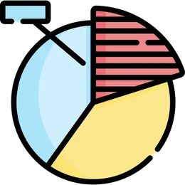
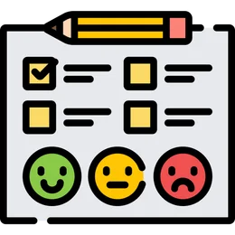

Hi, I'm Daniela
Mixed-Methods UX Researcher, Ontario
I combine qualitative depth with quantitative rigour to help multi-disciplinary teams embed user needs into product strategy. My website gives more details about the types of research I do, how I do it, and the impact it has on product decisions.
Explore my academic projects and resume for more details. Want to connect? Get in touch — I'm happy to dive into anything listed here.
How I can help
Quantify product design ROI and shifts in competitive advantages over time.
My benchmarking workInform early product directions through in-depth exploration of problem spaces.
My discovery work
Drive product decisions with data from large-scale surveys of user needs and attitudes.
My survey workDe-risk design decisions by validating user needs with wireframes and prototypes.
My concept testing work
Uncover user pain points and improvement opportunities through product assessments.
My usability testing workLeverage expertise from academia for complex product challenges.
My research foundations